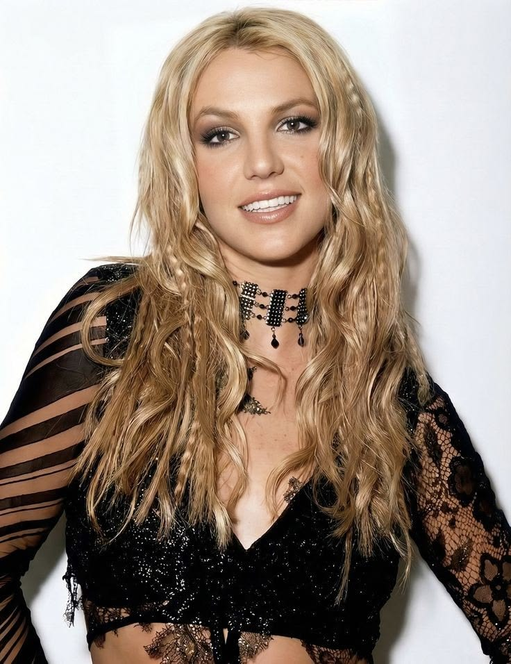

Maiores estrelas musicais da era

No pop, a maior cantora dos anos 2000 foi a Britney Spears. Ela foi a artista feminina que vendeu mais discos nesse período, superando 67 milhões de cópias com hits que definiram os anos 2000, como Toxic
No R&B, foi o Usher. Considerado o rei do R&B,com o álbum Confessions(2004), um dos mais vendidos do século, Usher foi o cantor com mais semanas no topo da Billboard Hot 100 na década.
Já no quesito estatísticas de vendas e consolidação da Billboard apontam o rapper Eminem como o artista que mais vendeu discos no mundo durante aquela década, superando a marca de 137 milhões de cópias vendidas com álbuns históricos como The Marshall Mathers LP.
No cenário do pop e R&B mundial, nomes como Beyoncé e Rihanna também se consolidaram e continuaram ditando o ritmo da música nas décadas seguintes.